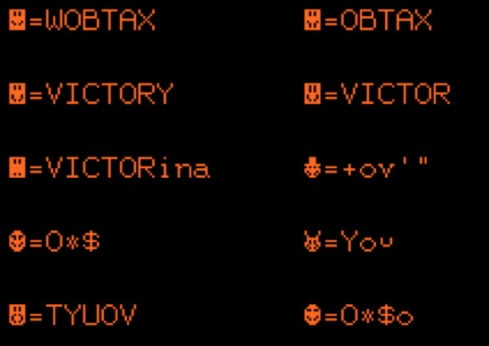
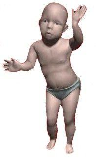
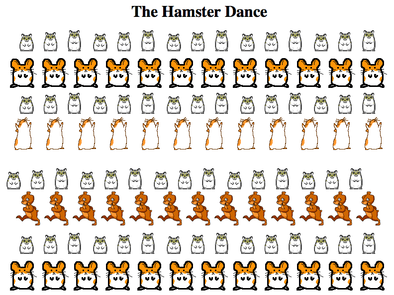
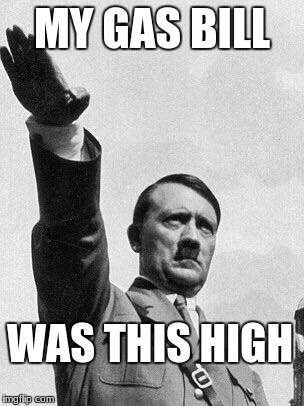

introduction
With the rapid development of technology and the popularity of smart devices, people were not satisfied with the text characters, they want something that is more lively and better expresses their emotions and feelings. It is not surprising that people use emojis and memes nowadays on a daily basis. This essay will discuss the history of Internet emoticons and memes, and also on the topic of does making and using of memes violate people’s image rights.
history of internet emoticons and memes
In the late 1960s, the operating system developers successfully designed a system that can handle multiple tasks at the same time (“History of Operating Systems”). One of the operating systems designed at the time was PLATO, Programmed Logic for Automatic Teaching Operations. In the 1970s, PLATO IV computer system users were already using emotion icons. “On PLATO, you could press SHIFT-space to move your cursor back one space - and then if you typed another character, it would appear on top of the existing character.” (Figure.1)(Brian) Later in 1982, Scott Fahlman used the first smiley emoticon using ASCII code on a message board, the idea behind was to differentiate between serious posts and jokes (“Original Bboard Thread in which :-) was proposed”).

(Fig.1, Brian L. Dear, "A close-up of some famous PLATO smileys.”)
In the 1980s, the fourth generation of the operating system brought the possibility for the personal computer, which the price was made more affordable for people (“History of Operating Systems”). In 1986, Yasushi Wakabayashi introduced Kaomoji on ASCII-NET. As compared to the western style emoticons, the Japanese kaomoji can be viewed and understood without tilting viewers’ head, and the western styles often change the mouth while the other usually change the eyes to have different emotions (“Western Emoticons VS Japanese Kaomoji”). Other Asian countries included their own language into the kaomoji and reproduced the emoticons in their own styles. For Korean, “they use the consonant jamos like ㅅ, ㅁ or ㅂ for mouth or nose, and ㅇ, ㅎ or ㅍ for eyes.” And In China, the Chinese characters like 囧, 崮, 商, 囧興 are used to represent different kinds of frown face, and 皿, 益 for teeth and frowns. It also used together with the posture emoticon “Orz” as “囧rz” (“Emoticon”).
The father of emoji, Shigetaka Kurita thought text cannot express emotions as clear as images, he wanted to create something like the icons used for the weather forecasts (Marc). Later in 2007, Apple wanted to be part of the Japanese phone market, so they implemented emojis in the iPhones to attract Japanese users (Marc). “The Unicode Standard is a computing industry standard meant to ensure the consistent handling and encoding of text expressed in a majority of the globe’s writing system” (Marc). Only In 2011, Apple saw the demand of the emojis outside Japan, they began to officially support emojis globally (Marc).
The term “memes” was first introduced in Richard Dawkins’ book, The Selfish Gene, he mentioned in his book that ideas were like organism. (“Memes throughout History: Where Did it Begin.”) In the 1990s, there were already some famous memes like “The Dancing Baby” (Figure.2) and “The Hamster Dance” (Figure.3).

(Fig.2, "The Dancing Baby”)

(Fig.3, “The Hamster Dance”)
In the 2000s, with the birth of the smartphones and online social media community platforms, people had a chance to send images or post images online. People started to use screenshots from movies, dramas, games or animations with some texts to express their feelings. People make memes to entertain other viewers online, and people will then use the memes to express their feelings by repost the memes online or send to their friends. Moreover, memes are also used to increase awareness for dramas and movies (Figure.4). In China, the casts can even interact with the viewers by sharing memes on Weibo (a social media platform used by Chinese) based on the storyline. Last but not least, memes can also help in the political elections. During the 2016 United States Presidential Election, “both Donald Trump and Hillary Clinton tried to use memes to swig votes in their favor.” (Madeline)

(Fig.4, “Hitler Memes”)
does making and using of memes violate people’s image rights
Memes can be made with little effort and cost, and it spreads in a really fast speed. Especially for those are based on famous celebrities and characters. What’s more? Memes are extremely influential, which means will attract more viewers and customers. People may want to make memes using celebrities’ images to attract more followers or sell the products that have memes on it. Is it legal to do all these? Where is the baseline for people to make and use memes?
There are three important points here, people cannot use the memes if the celebrity does not allow other to use his image in the memes and the purpose of making and using memes must not for commercial purposes. Lastly, the memes must not harm the copyright holder. “Pursuant to the copyright acts of nearly all nations, copyright subsists for the life of the author plus and additional 50 to 70 years depending on jurisdiction.” (Elias) However, people are allowed to use the images if it’s for study, private use, parody, criticism purposes. To be safe, it’s more favorable to use the images that you have the license or own the copyright.
website visualisation
Here is the ideas of what is going to happen in the final website. When the viewer opens the website, they will see an animation of the history of emoticons. Start from a typing animation of the smiley face with the PLATO computer as the background, it will turn to :-) with a different computer (1980s style) for the background. After that, it will turn to (^_^), again with a different computer at the back. The variations of kaomoji come out from the original one and transform to emojis in different social media platforms. Everything comes together in the center of the screen and forms a meme, there will be assets drops down from the top at the same time, the assets are the options for viewers to interact with. Viewers have to drag the meme onto the assets, a window will pop out and tell the viewer if it’s legal to make or use in this way. There will be a close tab to close the pop-up window and allow the viewers to choose other assets.
Situation 1: Viewer placed the meme onto a dialogue window icon and the meme is sent to a friend.
Situation 2: Viewer placed the meme onto a paint bucket icon, the brush vilifies the character in the meme.
Situation 3: Viewer placed the meme onto a social media platform icon and the meme is being posted to the channel without credit the original creator, the followers of the channel increases.
Situation 4: Viewer placed the meme onto a paper icon, the text of the research information of the meme appears.
Situation 5: Viewer placed the meme onto a video icon, the video of the criticism of the meme appears.
Situation 6: Viewer placed the meme onto a shirt icon, the meme is printed on the shirt and selling at an unreasonable price.
Situation 7: Viewer placed the meme on a phone icon, the meme becomes phone wallpaper.